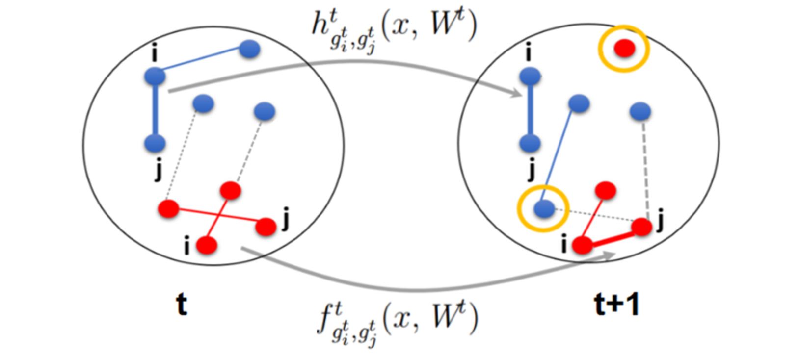
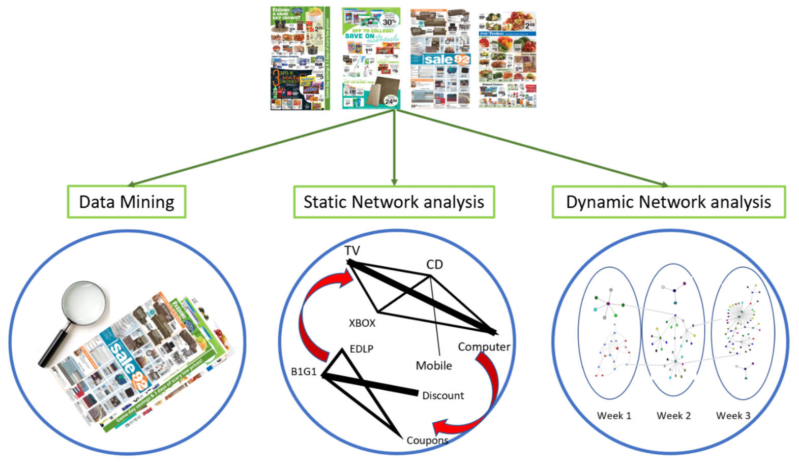

Spatial-Temporal Recommendation Systems
with Theja TulabandhulaWorking paper
See More...
Effective recommendation systems improve customers' experience and lead to loyalty. We are studying various approaches for designing recommendation systems using neural networks. We focus on exploiting temporal, spatial (user network) and hierarchical structure in the data using node and edge embeddings, graph convolutional networks, recurrent architectures, and variants. We systematically investigate how each of these innovations contributes to the overall performance of recommendations using data from large recommendation engines.
Managing Adoption under Network Effects
with Vijay Kamble, Theja Tulabandhula
Workshop on Economics of Networks, Systems and Computation (NetEcon 2019)

Block-Structure Based Time-Series Models For Graph Sequences
with Theja Tulabandhula
NIPS Workshop on Advances in Modeling and Learning Interactions from Complex Data, 2017
Finalist paper in Midwest Machine Learning Symposium (MMLS 2018)

Prescriptive Analytics for Store Flyer Design
with Selva Nadarajah,Negar SoheiliTechnical report
See More...
Store flyers are a key component in the promotional portfolio used by the retail industry. While the extant literature has studied the impact of flyer design on consumer behavior, research on methodology to facilitate flyer design is lacking. The goal of this study is the design of a retail store flyer, which first requires to determine an assortment of products to promote, second price and promotion type, and lastly layout and position. We focused on the following: First, further exploring the data set to identify interactions between categories and product characteristic and using this information to modify the demand model and simplify the optimization; Second, designing an approach to make column generation feasible for flyer design; and lastly, performing a numerical study that integrates the demand model and solution approach.